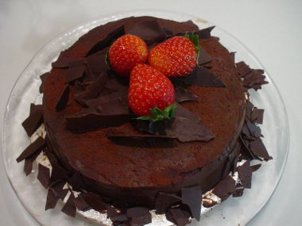

Chocolate Cake Recipe
Here's the recipe for the preparation of a chocolate bourbon cake. This recipe prepares the cake for 6 servings.
Ingredients
For Cake:
- 1 cup (2 sticks) unsalted butter, softened
- 2 cups all-purpose flour
- 5 ounce unsweetened dark chocolate
- ¼ cup instant espresso (or instant coffee)
- 2 tablespoons unsweetened cocoa powder
- 1 cup bourbon whiskey (can use ½ cup)
- ½ teaspoon kosher salt
- 2 cups granulated sugar
- 3 large eggs
- 1 tablespoon vanilla extract
- 1 teaspoon baking soda
- ¼ cup confectioners sugar (powdered sugar)
Method of Preparation
- Preheat oven to 325° F. Grease and flour a large bundt pan (10 cup capacity), or two 8- or 9-inch loaf pans. Melt chocolate in a microwave oven or in a double boiler over simmering water. Let cool.
- Put instant espresso and cocoa powder in a 2-cup (or larger) glass measuring cup. Add enough boiling water to come up to the 1 cup measuring line. Mix until powders dissolve. Stir in whiskey and salt; let cool.
- Beat softened butter until fluffy (2-3 minutes on high). Add sugar and beat until well combined. Add the eggs one at a time, beating well between each addition. Beat in the vanilla extract, baking soda and melted chocolate, scraping down sides of bowl with a rubber spatula.
- With the mixer on the lowest speed, beat in a third of the whiskey espresso cocoa mixture. When liquid is absorbed, beat in 1 cup flour. Repeat additions, ending with whiskey mixture. Scrape batter into prepared pan and smooth top. Bake until a cake tester inserted into center of cake comes out clean, about 1 hour 10 minutes for Bundt pan (loaf pans will take less time, start checking them after 55 minutes).
- Transfer cake to a rack. Unmold after 15 minutes and sprinkle warm cake with more whiskey. Let cool. Sprinkle powdered sugar through a mesh sieve over the cake before serving.